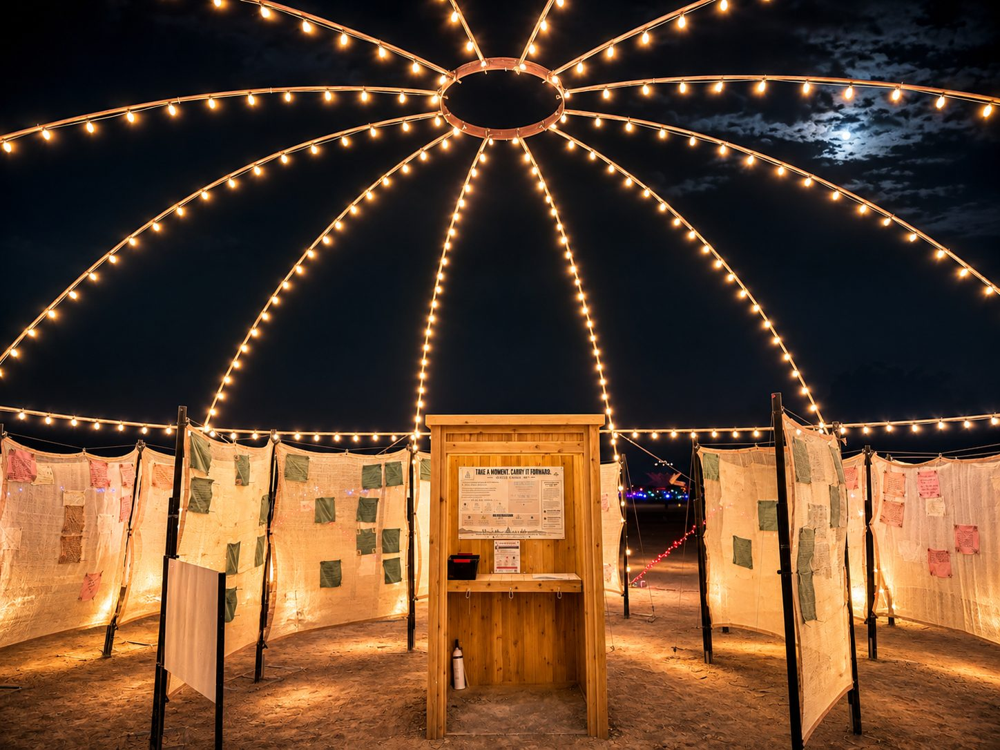

Art installation · Burning Man 2026
The Witness Wall
Sacred Archives of Medical Harm
A spiral of fabric panels under a lighted dome in the Nevada desert, where people wrote accounts of medical harm and healing on cotton squares and hung them for others to read. About 160 people added their testimony.

Why a wall
What the medical chart leaves out
The medical record is treated as the official account of what happened to a patient. Being dismissed, misdiagnosed, injured, or left unheard rarely enters that record in the patient's own words.
The Witness Wall offered a different kind of record. Each square was written by a separate hand, then joined with the others into one public wall. Together they made a collective account that no single story could, out in the open where anyone could stop and read.
The project grew out of the lab's Confession Booth pilot and its broader work on how testimony is received, remembered, and acted on.
The installation
How it worked
01 · Structure
A spiral under a dome
Shade-cloth panels on steel frames formed a walkable spiral beneath a lighted dome, with a wooden writing booth at the center. The structure was engineered by a licensed professional engineer to stand up to desert wind.
02 · Squares
Cloth, not forms
Participants wrote on 10-inch cotton squares in dusty rose, white, and sage, then hung them on the panels. Squares were anonymous by design, and signage explained that they might be used for education and research.
03 · Archive
Photographed before it was gone
Every square was photographed on site, so the testimony survives even though the installation itself was temporary.
What we learned
Two ways of collecting, two kinds of testimony
Collection ran in two phases. At first, volunteers staffed the booth, and each contributor chose whether their square would be photographed, displayed, or both. Later, blank squares were simply left at the wall for people to write and hang on their own, with no one watching.
The unstaffed phase seemed to draw more candid accounts, but at the cost of any record of each person's preferences. That trade-off is now the subject of the lab's writing on consent, documentation, and stewardship when testimony is given anonymously and contributors cannot be contacted again.
Project team
Who built it
Acknowledgment
Supported by OSU Center for Health Sciences
The Witness Wall was supported by a Pilot/Seed grant from the Oklahoma State University Center for Health Sciences Office of the Vice President for Research. Testimony squares were contributed anonymously. To protect contributors, we do not publish individual testimonies on this site.
Questions
matt.vassar@okstate.edu
Address
SAFE Evidence Lab
Oklahoma State University Center for Health Sciences
1111 W. 17th St., Tulsa, OK 74107